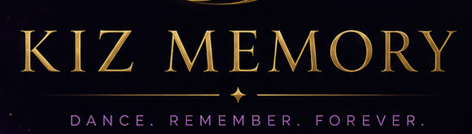

Étape 1/5
Nouvelle Memory
Choisissez votre entrée
Un seul choix maintenant. Le montage automatique vient ensuite.
🔒
Vos fichiers restent dans le navigateur. Cette V3.6 crée un montage vertical bêta en WebM.
📷
Caméra prête
Appuyez sur REC pour filmer
REC puis stop : l’analyse démarre automatiquement.
Étape 2/5
Analyse en cours...
On repère les meilleurs moments et on prépare le récap vertical.
0%
- ✓ Vidéo reçue
- 2 Sélection automatique
- 3 Préparation montage
Étape 3/5
Format
Choisissez la durée
Le rendu reste vertical 9:16 pour Reels, TikTok, Shorts et WhatsApp.
Étape 4/5
Montage automatique
Préparation du rendu vertical...
Cette bêta peut prendre quelques secondes. Ne fermez pas la page.
Étape 5/5
Memory prête
KIZOMBA NIGHT
Montage bêta · 15s · 9:16
Confidentialité
Contrôle avant partage
La vraie version devra intégrer le floutage, la validation des clips et les règles de consentement avant diffusion. Cette bêta reste locale dans votre navigateur.